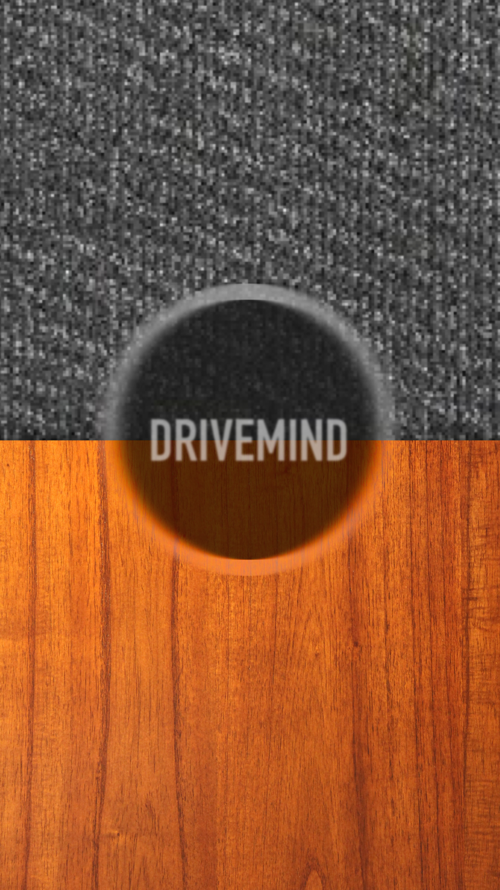
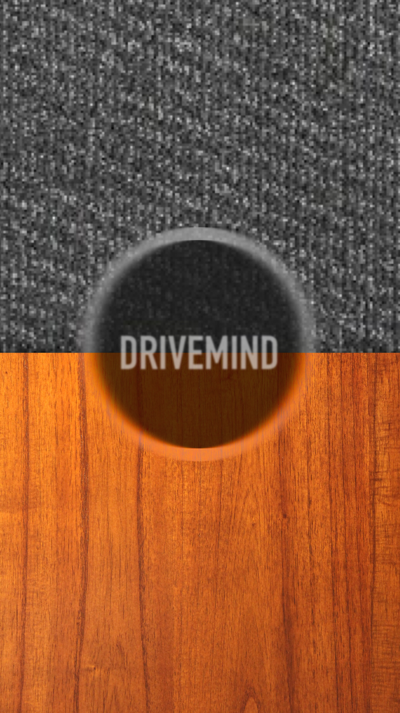

Drivemind
Bringing safety and mindfulness practice to drivers.
2015 | research, rapid prototyping, product design
Sketch, experience prototypes
A collaboration with Nishant Jacob and Keenon Werling for Stanford CS 247: Human-Computer Interaction Studio.
How might we bring mindfulness to a mundane routine?
Most of us know that meditation or mindfulness practice would be a healthy addition to our lives. But making time for it isn't easy. We found an untapped store of time in people’s everyday lives: their commutes. Could we take one of the most stressful routines in our lives and repurpose that time?
The solution
With Drivemind, the car becomes a mindfulness experience. The app simulates the physics and sound of marbles in your car, giving you subtle auditory feedback on the smoothness of your driving. Our goals are to help people:
bring meditative practice into their commutes,
increase their fuel-efficiency, and
become safer drivers.

You set your phone on a flat surface in your car, like the center console or passenger seat. You won't need to look at the screen; the sounds of the marbles give you real-time feedback on your driving. Your goal is to reduce the number of marble collisions. When you drive smoothly, marbles get added to the screen, increasing the challenge. When you drive less smoothly, marbles collide and disappear. When you’re done with your drive, the number of marbles left provides post-hoc feedback on how your drive went.
Ideation and needfinding
This project began as an exploration of people’s relationship with their personal data. We spoke to people who had chosen not to be on Facebook, which they were often doing to escape the onslaught of other people's personal data, or to protect their own. Some of them used terminology related to mindfulness when they talked about "unplugging" from the social internet.
We began to ask about our interviewees' daily routines and gained insight into how some activities were energy-feeding and some were energy-sapping. We wondered if we could repurpose driving time, typically energy-sapping, as mindfulness time. Then we followed this line of thought to more interviews, this time with freelance workers, Lyft drivers, and our mentor Alex Pang.
Experience Prototypes
After many rounds of brainstorming, one idea stood out: to give people feedback on their driving in order to make the experience more focused and mindful. In this scenario, paper prototypes weren’t going to cut it. Instead, we created several prototypes to try to answer specific questions we had.
Q: Do people change the way they drive when made more aware of their acceleration/deceleration rate?
Prototype: A game where we put objects of various weights and sizes on the driver’s dashboard and told them not to let the objects fall over.
Results: This simple game worked surprisingly well to train people to drive more smoothly. By the end of a 15 minute drive, participants were accelerating and decelerating much less abruptly. It was also clear how the “game” worked, because it followed the laws of physics. Larger objects worked better because the driver could keep them in his peripheral vision while also paying attention to the road. At the same time, we knew that visual feedback could be distracting and potentially unsafe. We wanted to produce audio feedback that "made sense” in the same way a physical object did.
Q: What kind of audio makes for a mindful, pleasant, and safe driving experience?
Prototype: One of us sat in the backseat of the car and played different types of noises when we felt a rapid acceleration or deceleration.
Results: The problem with much of the audio feedback we gave was that it tended to be negative reinforcement rather than positive: playing a beeping sound when we detected jerky acceleration, for example, or lowering the volume of the music. For the most part, if the driver was doing a good job, feedback was silent or unnoticeable, giving little indication that the driver was partaking in an experience at all. If the driver was doing poorly, the beeping feedback seemed judgmental and stressful.
Q: Does a phone's accelerometer accurately detect smooth and jerky driving?
Prototype: A simple app that uses the accelerometer to measure driving speed and lowers the volume of the music playing in the car when driving was too jerky.
Results: We did learn from the technical prototype that using the phone's accelerometer was a reliable way to gauge smooth driving, but we knew we hadn't figured out the best feedback mechanism yet. It was hard to tell by ear what “baseline” volume was, so the drivers weren’t sure when they were doing a good job. In the moment, it wasn't easy to figure out if volume modulations were a purposeful result of the app, or simply the musical dynamics getting softer. Based on our learnings from the object-on-dashboard prototype, we wanted something that seemed physical, was non-intrusive and non-judgmental, and produced a sound.
Q: Are the sounds made by marbles rolling in a tray enough to tell a driver how smoothly they're driving?
Prototype: We found some real glass marbles and a shoebox lid, and we sat in the backseat of our drivers' cars where they couldn't see the marbles. We asked them to modify their driving based on the auditory feedback they got from the marbles.
Results: We found that this worked well, and that the marbles made enough sound to give drivers the right amount of feedback. Based on the findings from all of the prototypes we tested, we decided to build a digital simulation of the marbles experience that drivers could have with them whenever they drove.
App Prototypes
We met with a sound expert from CCRMA and Google Sound Research to give us tips on how we could record and use the sounds of rolling marbles in our app. Meanwhile, we worked on a physics engine to model rolling marbles and tie their movements to data from the phone's accelerometer. We started testing low-fi prototypes with drivers.
Early prototypes had two levels: one surface, "carpet," that was easier and had a lower sensitivity, and another, "wood," that was more challenging. In testing this, we learned that the distinction between the two was confusing and distracting for users, so we decided to stick with a single surface. The mechanics of the game—that the marbles would start to collide and disapper as you drove less smoothly—were also not entirely clear from the outset. We knew that drivers wouldn't want to read a lot of instructions before beginning the game, so we decided to incorporate a simple, visual splash screen when the app launched.

 



We initially had the marbles start to turn red as they collided with each other, until, after too many collisions, they disappeared with a red splatter. Users found this visualization upsetting. (In response to this observation we modified the app so that marbles collided and disappeared with a small popping sound and gentle blue sparks.)
We noticed that many users anthropomorphized the marbles as they talked about them. They grew attached to "their" marbles and became more invested in doing well at the game so that they could "keep" them. We were interested in designing around this idea of the marbles as a personal collection.
Thinking about a future version of this app, we would like to experiment with giving the marbles interesting individual designs so they can be distinguished from each other. That way, the driver can maintain engagement by watching their collection grow and change in delightful ways. Collections that persist across many drives could also be a way to track longer-term progress and improvement, and help make a habit of mindful driving.